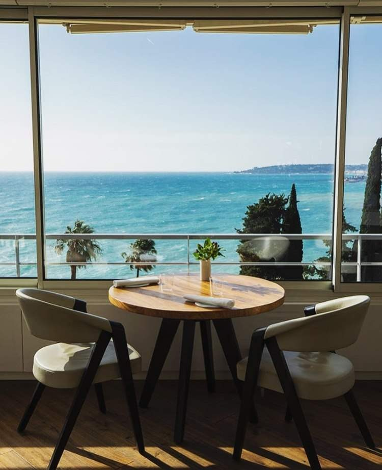

Sobre...
|
Sobre as montanhas, com vista para o mar, perto da fronteira com Itália, encontramos o abrigo de Mirazur. Imerso numa vegetação exuberante, oferece um cenário idílico. A espaçosa, elegante e luminosa sala de jantar envolve o mar a perder de vista a cidade de Menton através de uma longa baía circular. O restaurante francês, Mirazur, tem três estrelas Michelin. Foi premiado com o cobiçado título de Melhor Restaurante do Mundo e Melhor Restaurante da Europa, no ano de 2019. |
 |
|
|
O prêmio World’s 50 Best Restaurants em 2019 concedido ao restaurante francês dirigido pelo chef Mauro Colagreco foi revelado durante uma cerimônia realizada no Marina Bay Sands, em Singapura, com a presença de chefs famosos de todo o mundo. Esta é a primeira vez nos 18 anos de história da premiação que um restaurante francês recebe a maior condecoração.
“A escolha do Mirazur é um testemunho do amor do chef Colagreco por produtos locais, a maioria cultivada no jardim de três andares do restaurante, a poucos metros da sala de jantar, complementada por um deslumbrante cenário da Riviera Francesa”, explicaram os organizadores.
“Estamos empolgados por ver o Mirazur ocupar o topo, em 2019, após sua estreia na lista em 2009, na 35ª posição. É brilhante testemunhar seu progresso”, disse William Drew, diretor de conteúdo da publicação “The World’s 50 Best Restaurants”. “Este ano de 2019 foi um ano maravilhoso e de progresso para a lista como um todo, com tantas novas participações de todos os cantos do mundo.